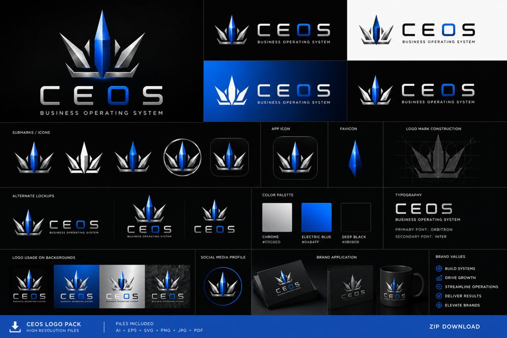

01 · Flagship
CE OS
A business-operating-system studio — brand identity, product positioning, full website, and the design system that ties it together. The whole thing, built as one connected system.
Brand SystemsDigital ProductsOperationsActive studio · 2026
Proof · DJ's role
Positioning, brand identity + design tokens, messaging, full multi-page website, and the "connected system" product model. Built end-to-end.
